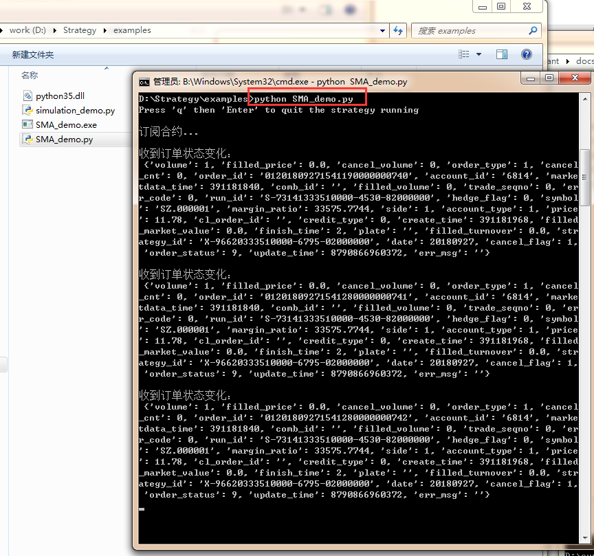
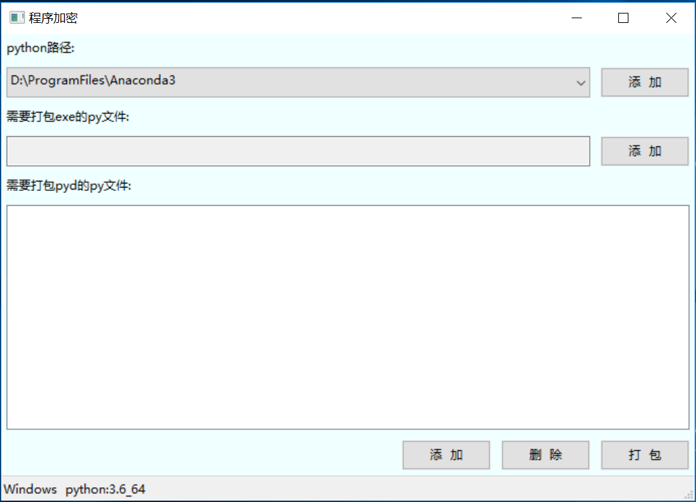
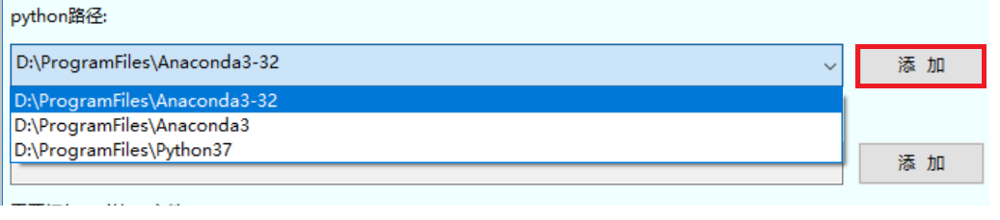
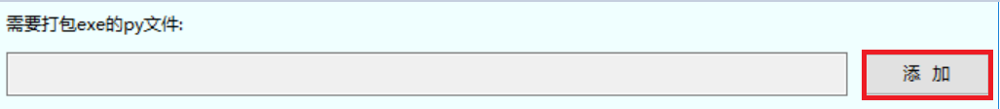
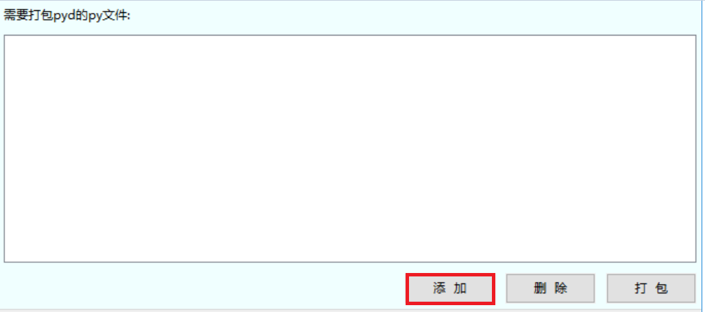

君弘君易交易系统 (PYTHON)¶
安装指南¶
2. 下载策略安装包¶
获取策略模板版本压缩包 策略模板版本Vxx.xx.xx-release-python3.7z，并解压到工作目录（以D:\Strategy为例）。
目录结构及其说明如下图：
Note
确保python安装目录以及工作目录中不含有空格，否则会导致策略运行失败。
3. 安装¶
4. 验证安装是否成功¶
cd到examples文件夹，运行以下命令启动demo程序
Note
确保在策略同级目录下，存在strategy.ini文件，该文件指定了回测模式、交易账号等信息。如果策略运行错误，可查看同级的log目录，分为网关日志、行情日志、交易日志和策略日志。
# 极简的买入持有策略
python BaH_demo.py
# 包含常用api的用法
python simulation_demo.py
# 均线策略，需要依赖talib包
# pip install ta-lib
python SMA_demo.py
运行SMA_demo成功的示例如下：
策略文档上传至实盘云机前可选择加密，具体请参考 策略加密
快速上手¶
2. 编写第一个策略¶
该策略为最简单的买入并持有万科A股票。当接收到第一个Bar行情时即买入股票，并一直持有。
1 2 3 4 5 6 7 8 9 10 11 12 13 14 15 16 17 18 19 20 21 22 23 24 25 26 27 28 29 30 31 32 33 34 35 36 37 38 39 40 41 42 43 44 45 46 | # -*- coding: utf-8 -*-
# Buy and Hold
from sparkquant import *
def init(context):
# 设置这个策略当中会用到的参数，在策略中可以随时调用，这个策略使用买入并持有万科A股票
context.SYMBOL = 'SZ.000002' # 使用的合约编号
context.ACCOUNT_ID = '6814' # 报单时指定的账号
context.VOLUME = 100 # 报单数量（股票单位：股，期货单位：手）
context.fired = False # 是否已报单
# 订阅行情数据
print('订阅合约...')
subscribe([context.SYMBOL + '.bar'])
def on_bar(context, bar_dict):
# print(bar_dict)
# 接收bar数据，在收到第一个bar行情时买入股票
if not context.fired:
print("报单...")
order_price = bar_dict['close'] # 使用最新价
order_volume(context.ACCOUNT_ID, context.SYMBOL, context.VOLUME, order_price)
context.fired = True
def on_order_status(context, order):
# 如何接收订单状态变化事件
# 在实盘中，需要考虑报单不能全部成交的情况，并在此处进行追单处理
print('\n收到订单状态变化：\n', order)
def on_execution_report(context, exec_report):
# 如何接收成交回报事件
print('\n收到成交回报： \n', exec_report)
if __name__ == '__main__':
# 如何开始运行策略
run(init=init,
on_bar=on_bar,
on_order_status=on_order_status,
on_execution_report=on_execution_report,
is_async=True)
|
3. 运行策略¶
可以选择在Python IDE中运行，也可以直接在命令窗口运行如下代码
python demo.py
如需退出策略执行，输入 q 并回车。
更多策略接口请参考 API介绍
更多策略示例请参考 策略示例
4. 第三方库依赖（实盘）¶
在实盘环境中，策略如调用了云机环境中未提供的第三方Python库，请联系平台客服人员进行安装，否则会导致策略无法正常运行。
云机中默认已安装的第三方库：
| 模块名称 | 版本 | 简介 |
|---|---|---|
| NumPy | 1.9.3 | NumPy系统是Python的一种开源的数值计算扩展。NumPy（Numeric Python）提供了许多高级的数值编程工具，如：矩阵数据类型、矢量处理，以及精密的运算库。专为进行严格的数字处理而产生 |
| TALib | 0.4.9 | TALib是一个处理金融数据和技术分析的开放代码库 |
5. 常见问题¶
- 启动策略时提示“交易服务内部初始化错误”
解决方案：该文件可能被未正常结束的python进程占用，结束此进程再试。多个策略同时运行时，请确保每个策略可执行文件置于不同目录下。
策略程序架构¶
1. 策略程序初始化¶
通过init函数初始化策略,策略启动即会自动执行。在init函数中可以：
- 定义全局变量。 通过添加 context - 策略上下文 包含的属性可以定义全局变量，如context.x,该属性可以在全文中进行传递。
- 定义调度任务。 可以通过 schedule - 设定定时任务 ，程序在指定时间自动执行策略算法。
- 准备历史数据。 通过 数据查询 函数获取历史数据
- 订阅实时行情。 通过 subscribe - 订阅行情 ，用以触发行情 数据事件 处理函数。
策略 必须提供init函数 的实现，以在其中进行必要的初始化操作。
2. 策略入口¶
run - 启动策略 函数用于启动策略。通过 run - 启动策略 函数可以注册各种用户自定义的回调函数，指定配置文件路径和日志文件路径， 以及运行模式（异步/同步）等。其典型应用方式如下：
1 2 3 4 5 6 7 8 9 | if __name__ == '__main__':
run(init=init,
on_bar=on_bar,
on_tick=on_tick,
on_order_status=on_order_status,
on_execution_report=on_execution_report,
config_dir=os.path.dirname(os.path.realpath(sys.argv[0])),
log_dir=os.path.dirname(os.path.realpath(sys.argv[0])),
is_async=True)
|
策略 必须调用run函数 以启动策略。
3. 行情事件处理函数¶
在 run - 启动策略 函数中可以注册返回tick数据和返回bar数据的回调函数。当通过 subscribe - 订阅行情 函数订阅的行情到达时，会 产生如下的 数据事件 (视订阅的数据而定):
- 盘口tick数据事件。 通过 on_tick - 返回Tick数据 回调函数响应tick数据事件，可以在该函数中继续添加自己的策略逻辑,如进行数据计算、交易等。
- 分时bar数据事件。 通过 on_bar - 返回Bar数据 回调函数响应bar数据事件，可以在该函数中继续添加自己的策略逻辑，如进行数据计算、交易等
4. 交易事件处理函数¶
在 run - 启动策略 函数中可以注册返回报单状态和返回成交回报的回调函数。当通过 交易函数 进行交易时，会产生如下 交易事件 ：
- 报单状态变化事件。 当报单状态产生变化时会触发 on_order_status - 返回报单状态 回调函数，用于监测委托状态变更。
- 成交回报事件。 当交易委托被执行后会触发 on_execution_report - 返回成交回报 回调函数，用于监测委托执行状态。
重要概念¶
symbol - 代码标识¶
代码标识（symbol）一般由 交易市场代码 ， 交易标的代码 , 和 实时行情可订阅数据类型 按某种规则组合而成， 典型的组合规则举例如下：
- 行情和交易的symbol由“交易市场代码.交易标的代码”组合而成，例如
history('SH.600000', '1tick', '2018/08/06 10:0:0')。- 订阅行情的symbol有“交易市场代码.交易标的代码.实时行情可订阅数据类型”组合而成，例如
subscribe('SZ.000002.bar')。
交易市场代码¶
| 市场代码 | 说明 |
|---|---|
| SH | 上海证券交易所 |
| SZ | 深圳证券交易所 |
| CFFEX | 中金所 |
| SHFE | 上期所 |
| CZCE | 郑商所 |
| DEC | 大商所 |
| HK | 香港证券交易所 |
| SHOP | 上交所期权市场 |
交易标的代码¶
交易表代码是指交易所给出的交易标的代码, 包括股票, 期货, 期权, 指数, 基金等代码。 具体的代码请参考交易所的给出的证券代码定义。
实时行情可订阅数据类型¶
| 数据类型名 | 说明 |
|---|---|
| tick | tick级行情数据 |
| bar | 分钟K线数据 |
| index | 指数行情数据 |
| zw | 逐笔委托数据 (仅深交所) |
| zc | 逐笔成交数据 |
| fast | 撮合行情数据 (仅深交所) |
| queue | 委托队列数据 |
mode 运行模式¶
策略支持3种运行模式，回测模式，模拟模式和实盘模式，用户需要在运行策略时选择模式。
回测模式¶
订阅指定时段、指定交易代码、指定数据类型的行情，行情服务器将按指定条件全速回放对应的行情数据。 适用的场景是策略回测阶段，快速验证策略的绩效是否符合预期。
模拟模式¶
订阅行情服务器推送的实时行情，也就是交易所的实时行情，只在交易时段提供。 所有的交易操作由系统提供的撮合规则进行模拟撮合交易。
撮合规则：
1. tick撮合
a. 委托下达后，收到第一笔该委托标的合约的tick数据时，利用tick中的盘口数据尝试对该笔委托进行撮合：
如为买委托时，当买价-滑点>=卖1价时认为该笔委托可以和卖1成交，成交量为min(委托量,卖1量*成交比例)，
如委托量还有剩余继续尝试和卖2盘口成交，依次类推直到不再成交或者全额成交。
b. 如该笔委托尚未进入终止状态，在收到标的合约的第一笔tick数据之后的每笔tick数据时，尝试利用该tick中的最新价对 该笔委托进行撮合： 如为买委托时，当买价-滑点>=最新价时认为该笔委托在该笔tick中有成交，成交量为min(委托量,该笔tick成交量*成交比例)。
2. 分钟k线撮合
委托下达后，如该笔委托尚未进入终止状态，在收到每一笔分钟k线数据时，尝试利用该分钟k线的最新价对。
该笔委托进行撮合：
如为买委托时，当买价-滑点>=最新价时认为该笔委托在该分钟k线内有成交，成交量为min(委托量,该分钟k线内成交量*成交比例)。
实盘模式¶
订阅行情服务器推送的实时行情，也就是交易所的实时行情，只在交易时段提供。 所有的交易操作均会交由指定的交易所去执行。
context 策略上下文¶
context是策略运行上下文环境对象，该对象将会在你的算法策略的任何方法之间做传递， 其中包含了一些常用的属性和方法（概要信息请参考 数据结构 部分的 Context ， 详情信息请参考 策略接口 部分的 context - 策略上下文 ），用户也可以根据自己的需求定义无限多种自己随后需要的属性。
数据结构¶
Context¶
更具体的信息请参考 context - 策略上下文
| 函数名 | 函数类型 | 返回类型 | 说明 |
|---|---|---|---|
| run_mode | 属性 | int | 获取运行模式，1：回测，2：模拟，3：实盘 |
| now | 属性 | datetime | 获取当前日期和时间:
|
| strategy_id | 属性 | str | 获取策略id |
| run_id | 属性 | str | 获取策略运行实例id |
| sys_account_id | 属性 | str | 获取系统账号 |
| universe | 属性 | list[str] | 获取所有当前订阅的合约代码 |
| log_level | 属性 | int | 获取日志级别，1: Debug, 2: Info, 3: Warn, 4: Error |
| cash | 静态 | list[Cash] | 策略资金账户数据列表或总资金。 |
| position | 静态 | list[ Position ] | 查询单个标的证券的持仓列表。 |
| positions | 静态 | list[ Position ] | 查询策略持仓列表。 |
| order | 静态 | Order | 查询单一订单详情。 |
| orders | 静态 | list[ Order ] | 查策略实例订单列表，支持分页查询。 |
| orders | 静态 | list[ Trade ] | 查单个订单成交列表。 |
SecurityBarData¶
| 字段名 | 类型 | 说明 |
|---|---|---|
| date | int | 日期 YYYYMMDD |
| time | int | 时间(北京时间) HHMM |
| open | float | 开盘价 |
| high | float | 最高价 |
| low | float | 最低价 |
| close | float | 收盘价 |
| volume | int | 成交量 |
| turnover | int | 成交额 |
| open_interest | int | 累计持仓总量 |
SecurityTickData¶
| 字段名 | 类型 | 说明 |
|---|---|---|
| time | int | 时间(HHMMSSmmm) |
| status | int | 状态 |
| pre_close | int | 前收盘价 |
| open | float | 开盘价 |
| high | float | 最高价 |
| low | float | 最低价 |
| match | float | 最新价 |
| ask_price1 | float | 申卖价1 |
| ask_price2 | float | 申卖价2 |
| ask_price3 | float | 申卖价3 |
| ask_price4 | float | 申卖价4 |
| ask_price5 | float | 申卖价5 |
| ask_price6 | float | 申卖价6 |
| ask_price7 | float | 申卖价7 |
| ask_price8 | float | 申卖价8 |
| ask_price9 | float | 申卖价9 |
| ask_price10 | float | 申卖价10 |
| ask_vol1 | int | 申卖量1 |
| ask_vol2 | int | 申卖量2 |
| ask_vol3 | int | 申卖量3 |
| ask_vol4 | int | 申卖量4 |
| ask_vol5 | int | 申卖量5 |
| ask_vol6 | int | 申卖量6 |
| ask_vol7 | int | 申卖量7 |
| ask_vol8 | int | 申卖量8 |
| ask_vol9 | int | 申卖量9 |
| ask_vol10 | int | 申卖量10 |
| bid_price1 | float | 申买价1 |
| bid_price2 | float | 申买价2 |
| bid_price3 | float | 申买价3 |
| bid_price4 | float | 申买价4 |
| bid_price5 | float | 申买价5 |
| bid_price6 | float | 申买价6 |
| bid_price7 | float | 申买价7 |
| bid_price8 | float | 申买价8 |
| bid_price9 | float | 申买价9 |
| bid_price10 | float | 申买价10 |
| bid_vol1 | int | 申买量1 |
| bid_vol2 | int | 申买量2 |
| bid_vol3 | int | 申买量3 |
| bid_vol4 | int | 申买量4 |
| bid_vol5 | int | 申买量5 |
| bid_vol6 | int | 申买量6 |
| bid_vol7 | int | 申买量7 |
| bid_vol8 | int | 申买量8 |
| bid_vol9 | int | 申买量9 |
| bid_vol10 | int | 申买量10 |
| num_trades | int | 成交笔数 |
| volume | int | 成交量 |
| turnover | int | 成交额 |
| total_bid_vol | int | 委托买入总量 |
| total_ask_vol | int | 委托卖出总量 |
| weighted_avg_bid_price | float | 加权平均委买价格 |
| weighted_avg_ask_price | float | 加权平均委卖价格 |
| iopv | int | IOPV净值估值 |
| yield_to_maturity | float | 到期收益率 |
| high_limited | float | 涨停价 |
| low_limited | float | 跌停价 |
| prefix | str | 证券信息前缀 |
| syl1 | float | 市盈率1,2位小数.股票：价格/上年每股利润,债券：每百元应计利息 |
| syl2 | float | 市盈率2,2位小数.股票：价格/本年每股利润, 债券：到期收益率,基金：每百份的IOPV 或净值 权证：溢价率 |
| sd2 | float | 升跌2（对比上一笔） |
| trading_phase_code | str | 交易状态代码, 上交所与深交所字段含义不同，参见以下注解：
|
| pre_iopv | int | 基金T-1日收盘时刻IOPV.仅标的为基金时有效 |
FuturesTickData¶
| 字段名 | 类型 | 说明 |
|---|---|---|
| time | int | 时间(HHMMSSmmm) |
| status | int | 状态 |
| pre_open_interest | int | 昨持仓 |
| pre_close | float | 昨收盘价 |
| pre_settle_price | float | 昨结算价 |
| open | float | 开盘价 |
| high | float | 最高价 |
| low | float | 最低价 |
| match | float | 最新价 |
| volume | int | 成交总量 |
| turnover | int | 成交总金额 |
| open_interest | int | 持仓总量 |
| close | float | 今收盘 |
| settle_price | float | 今结算价 |
| high_limited | float | 涨停价 |
| low_limited | float | 跌停价 |
| pre_delta | int | 昨虚实度 |
| curr_delta | int | 今虚实度 |
| ask_price1 | float | 申卖价1 |
| ask_price2 | float | 申卖价2 |
| ask_price3 | float | 申卖价3 |
| ask_price4 | float | 申卖价4 |
| ask_price5 | float | 申卖价5 |
| ask_vol1 | int | 申卖量1 |
| ask_vol2 | int | 申卖量2 |
| ask_vol3 | int | 申卖量3 |
| ask_vol4 | int | 申卖量4 |
| ask_vol5 | int | 申卖量5 |
| bid_price1 | float | 申买价1 |
| bid_price2 | float | 申买价2 |
| bid_price3 | float | 申买价3 |
| bid_price4 | float | 申买价4 |
| bid_price5 | float | 申买价5 |
| bid_vol1 | int | 申买量1 |
| bid_vol2 | int | 申买量2 |
| bid_vol3 | int | 申买量3 |
| bid_vol4 | int | 申买量4 |
| bid_vol5 | int | 申买量5 |
IndexTickData¶
| 字段名 | 类型 | 说明 |
|---|---|---|
| time | int | 时间(HHMMSSmmmm) |
| open | float | 今开盘指数 |
| high | float | 最高指数 |
| low | float | 最低指数 |
| match | float | 最新指数 |
| volume | int | 参与计算相应指数的交易数量 |
| turnover | int | 参与计算相应指数的成交金额 |
| pre_close | float | 前收盘指数 |
TickByTickEntrust¶
| 字段名 | 类型 | 说明 |
|---|---|---|
| channel_no | int | 频道代码 |
| seq | int | 委托序号(在同一个channel_no内唯一，从1开始连续) |
| price | int | 委托价格 |
| qty | int | 委托数量 |
| side | str | ‘1’:买; ‘2’:卖; ‘G’:借入; ‘F’:出借 |
| ord_type | str | 订单类别: ‘1’: 市价; ‘2’: 限价; ‘U’: 本方最优 |
TickByTickTrade¶
| 字段名 | 类型 | 说明 |
|---|---|---|
| channel_no | int | 频道代码 |
| seq | int | 委托序号(在同一个channel_no内唯一，从1开始连续) |
| price | int | 委托价格 |
| qty | int | 委托数量 |
| money | int | 成交金额 |
| bid_no | int | 买方订单号 |
| ask_no | int | 卖方订单号 |
| trade_flag | str | SH: 内外盘标识(‘B’:主动买; ‘S’:主动卖; ‘N’:未知) SZ: 成交标识(‘4’:撤; ‘F’:成交) |
Order¶
| 字段名 | 类型 | 说明 |
|---|---|---|
| strategy_id | str | 策略id |
| run_id | str | 策略运行id，代表策略的一次运行对应的id，即回测/模拟/实盘id |
| order_id | str | 后台系统生成的内部订单id |
| cl_order_id | str | 订单的客户方id |
| product_id | str | 交易标的，格式为市场.证券ID/市场.合约ID |
| account_id | str | 用户资金账户id |
| account_type | int | 用户资金账户类型，参考 AccountType 定义 |
| date | int | 订单创建日期，格式：YYYYMMDD |
| trade_seqno | int | 交易序号，即批次号 |
| order_status | int | 订单状态，参考 OrderStatus 定义 |
| order_type | int | 订单类型，参考 OrderType 定义 |
| side | int | 多/空，参考 OrderSide 定义 |
| credit_type | int | 信用类型，参考 CreditType 定义 |
| volume | int | 订单数量 |
| price | float | 订单委托价 |
| filled_volume | int | 订单累计已完成数量 |
| filled_turnover | float | 订单累计已完成金额 |
| filled_price | float | 成交均价 |
| filled_market_value | float | 成交合约价值 |
| margin_ratio | float | 保证金比率 |
| marketdata_time | int | 触发订单的行情时间，精确到微秒，格式HHMMSSmmmuuu |
| create_time | int | 订单创建时间，精确到微秒，格式HHMMSSmmmuuu |
| update_time | int | 订单更新时间，精确到微秒，格式HHMMSSmmmuuu |
| finish_time | int | 订单完成时间，精确到微秒，格式HHMMSSmmmuuu |
| cancel_flag | int | 撤单标识，参考 CancelFlag 定义 |
| cancel_volume | int | 撤单量 |
| cancel_cnt | int | 撤单次数 |
| hedge_flag | int | 组合投机套保标志，用于期货交易, 参考 HedgeFlag 定义 |
| comb_id | str | 组合投机套保编号，用于期货交易 |
| plate | str | 期权交易板块 |
| err_code | int | 订单委托错误码 |
| err_msg | str | 订单委托错误消息 |
Trade¶
| 字段名 | 类型 | 说明 |
|---|---|---|
| strategy_id | str | 策略id |
| run_id | str | 策略运行id，代表策略的一次运行对应的id，即回测/模拟/实盘id |
| order_id | str | 后台系统生成的内部订单id |
| cl_order_id | str | 订单的客户方id |
| product_id | str | 交易标的，格式为市场.证券ID/市场.合约ID |
| account_id | str | 用户资金账户id |
| account_type | int | 用户资金账户类型，参考 AccountType 定义 |
| date | int | 订单创建日期，格式：YYYYMMDD |
| trade_seqno | int | 交易序号，即批次号 |
| side | int | 多/空，参考 OrderSide 定义 |
| order_type | int | 订单类型，参考 OrderType 定义 |
| exec_type | int | 成交回报类型，参考 TradeReportType 定义 |
| volume | int | 成交数量 |
| price | float | 成交价格 |
| turnover | float | 成交金额 |
| market_value | float | 成交合约市值 |
| order_price | float | 委托价格 |
| order_volume | int | 委托数量 |
| transact_time | int | 成交时间，精确到微秒，格式HHMMSSmmmuuu |
Position¶
| 字段名 | 类型 | 说明 |
|---|---|---|
| strategy_id | str | 策略id |
| run_id | str | 策略运行id，代表策略的一次运行对应的id，即回测/模拟/实盘id |
| account_id | str | 用户资金账户id |
| account_type | int | 用户资金账户类型，参考 AccountType 定义 |
| product_id | str | 交易标的，格式为市场.证券ID/市场.合约ID |
| side | int | 持仓方向，参考 PositionSide 定义 |
| volume | int | 总仓量 |
| avail_volume | int | 可用仓量 |
| frozen_volume | int | 冻结仓量 |
| today_volume | int | 今仓总量 |
| today_frozen_volume | int | 今仓冻结量 |
| today_avail_volume | int | 今仓可用量 |
| yesterday_volume | int | 昨仓总量 |
| yesterday_frozen_volume | int | 昨仓冻结量 |
| yesterday_avail_volume | int | 昨仓可用量 |
| avg_cost | float | 开仓均价 |
| hold_cost | float | 持仓均价 |
| create_day | int | 初始建仓日期，格式：YYYYMMDD |
| update_day | int | 仓位变更日期，格式：YYYYMMDD |
| create_time | int | 初始建仓时间，精确到微秒，格式HHMMSSmmmuuu |
| update_time | int | 仓位变更时间，精确到微秒，格式HHMMSSmmmuuu |
CancelDetail¶
| 字段名 | 类型 | 说明 |
|---|---|---|
| order_id | str | 后台系统生成的内部订单id |
| cancel_order_id | str | 订单对应的撤单委托id |
| err_code | int | 撤单错误码 |
| err_msg | str | 撤单错误消息 |
API介绍¶
定时器¶
schedule - 设定定时任务¶
-
sparkquant.api.td_api.schedule(func, timer_type, interval=0, time=0)¶ 设定定时任务。
Parameters: - func – 定时运行函数。其参数为 context - 策略上下文。
- timer_type (str) – 定时器类型。目前仅支持‘timer’和‘day’：设定一个时间间隔的定时任务使用‘timer’， 设定每日某个时间点的定时任务使用‘day’。
- interval (int) – 定时器的时间间隔，单位为毫秒（ms），仅timer_type指定为‘timer’时有效。
- time (int) – 每日定时任务执行时间，格式为HHMMSS，仅timer_type指定为‘day’时有效。
Returns: Example: 1 2 3 4 5 6 7 8 9 10 11 12 13 14 15 16 17
#每2秒钟执行strategy_timer函数 schedule(strategy_timer, timer_type='timer', interval=2000) #每天的08:57:00执行strategy_day函数 schedule(strategy_day_85700, timer_type='day', time=85700) #每天的09:35:00执行strategy_day函数 schedule(strategy_day_93500, timer_type='day', time=93500) def strategy_timer(context): print("timer_schedule") def strategy_day_85700(context): print("day_schedule_85700") def strategy_day_93500(context): print("day_schedule_93500")
unschedule - 取消定时任务¶
-
sparkquant.api.td_api.unschedule(timer_type, interval=0, time=0)¶ 取消定时任务。
Parameters: - timer_type (str) – 定时器类型。目前仅支持‘timer’和‘day’：取消一个时间间隔的定时任务使用‘timer’， 取消每日某个时间点的定时任务使用‘day’。
- interval (int) – 待取消的定时器的时间间隔，单位为毫秒（ms），仅timer_type指定为‘timer’时有效。
- time (int) – 待取消的每日定时任务执行时间，格式为HHMMSS，仅timer_type指定为‘day’时有效。
Returns: Example: 1 2 3 4 5
#取消2秒钟的定时任务 unschedule(timer_type='timer', interval=2000) #取消每天08:57:00的定时任务 unschedule(timer_type='day', time=85700)
策略接口¶
context - 策略上下文¶
-
class
sparkquant.strategy.strategy_context.StrategyContext¶ 策略上下文。 负责管理当前运行策略的上下文信息，包括手续费，滑点，资产组合等信息。
-
static
cash()¶ 查询策略资金。
Returns: None or list[dict] 策略资金账户数据列表或总资金。若出现错误，录入错误日志后返回None。 cash属性 字段说明 account_id 用户资金账户id account_type 用户资金账户类型，参考 AccountType 定义 start_cash 初始资金 cash 当前资金 avail_cash 可用资金 locked_cash 冻结资金 turnover 累计交易额 today_turnover 今日交易额 today_close_value 今日卖出券获取的资金额 update_time 帐户更新时间戳 Example: 1 2 3 4 5 6 7 8 9 10 11
#获取资金账号信息 context.cash() #返回结果 [{'symbol': 'SZ.000002', 'strategy_id': 'X-01-20181105091236-00000006', 'run_id': 'B-00-20181226090202-11764248', 'account_id': '6814', 'account_type': <AccountType.Stock: 1>, 'side': <PositionSide.Long: 1>, 'volume': 100, 'avail_volume': 0, 'frozen_volume': 100, 'today_volume': 100, 'today_frozen_volume': 100, 'today_avail_volume': 0, 'yesterday_volume': 0, 'yesterday_frozen_volume': 0, 'yesterday_avail_volume': 0, 'avg_cost': 24.47, 'hold_cost': 24.47, 'create_day': 20181105, 'update_day': 20181105, 'create_time': 93000100000, 'update_time': 93000100000, 'error_no': 0}]
-
log_level¶ 获取日志级别，1: Debug, 2: Info, 3: Warn, 4: Error
Returns: int 日志级别
-
now¶ 获取当前日期和时间: 对于回测模式 - 返回回测执行当前日期时间，对于实盘和模拟模式返回当前机器的系统时间。
Returns: datetime.datetime 当前日期和时间 Example: 1 2 3 4 5
# 获取当前日期时间 context.now # 返回结果 2018-11-05 11:24:09.200000
-
static
order(order_id)¶ 查询单一订单详情
Parameters: order_id – 后台生成的订单id Returns: 对应订单详情，请参考 Order 定义 Example: 1 2 3 4 5 6 7 8 9 10 11 12
#查询id为'01201809101108120000001257'的报单详细信息 context.order('01201809101108120000001257') #返回结果 {'filled_volume': 0, 'filled_turnover': 0, 'order_type': <OrderType.LimitOrder: 1>, 'err_code': 0, 'finish_time': 0, 'comb_id': '', 'marketdata_time': 0, 'trade_seqno': 0, 'run_id': 'S-73141333510000-4530-82000000', 'margin_ratio': 0, 'err_msg': '', 'strategy_id': 'X-96620333510000-6795-02000000', 'cancel_cnt': 0, 'account_type': <AccountType.Stock: 1>, 'order_status': 2, 'create_time': 110812911715, 'cl_order_id': '', 'price': 23.0, 'date': 20180910, 'volume': 100, 'credit_type': 0, 'account_id': '6814', 'order_id': '01201809101108120000001257', 'plate': '', 'filled_market_value': 0, 'side': <PositionSide.Long: 1>, 'hedge_flag': <HedgeFlag.Non: 0>, 'error_no': 0, 'update_time': 110813029910, 'filled_price': 0.0, 'cancel_flag': 1, 'cancel_volume': 0, 'product_id': 'SZ.000002'}
-
static
orders(page_num, page_size, start_date='', end_date='', total_size=None)¶ 查策略实例订单列表，支持分页查询。
Parameters: - page_num – page_num表示此次分页请求从哪一页开始，第一页page_num为1。
- page_size – 输入时：分页个数，输出时：实际返回的订单个数 *注意：返回个数小于输入的分页个数时，表示数据已经全部读取完毕*。
- start_date – 查询开始日期,如果为空或NULL，则为当前交易日，格式为2018/3/1。
- end_date – 查询结束日期,如果为空或NULL，则为当前交易日，格式为2018/3/1。 end_date必须大于等于start_date，可以只传start_date，不可以只传end_date
- total_size – 返回的订单列表总条数，若不传入，则不返回。
Returns: 所有符合指定条件的订单的详细信息。报单信息请参考 Order 定义
Example: 1 2
#查询当天前2条报单的详细信息，返回报单列表 context.orders(1,2)
-
static
position(symbol)¶ 查询单个标的证券的持仓列表。
Parameters: symbol (str) – 单个标的代码。 Returns: None or list[ Position ] 单个标的持仓列表。若出现错误，录入错误日志后返回None。 Example: 1 2 3 4 5 6 7 8 9 10
#获取股票万科A的持仓信息 context.position('SZ.000002') #返回结果 [{'yesterday_frozen_volume': 0, 'account_type': 1, 'today_avail_volume': 0, 'frozen_volume': 2100, 'update_time': 110812911715, 'error_no': 0, 'run_id': 'S-73141333510000-4530-82000000', 'avail_volume': 464500, 'create_day': 0, 'strategy_id': 'X-96620333510000-6795-02000000', 'side': <PositionSide.Long: 1>, 'today_volume': 0, 'volume': 466600, 'hold_cost': 21.4268, 'update_day': 20180910, 'avg_cost': 21.0799, 'yesterday_volume': 341900, 'create_time': 0, 'yesterday_avail_volume': 341900, 'today_frozen_volume': 0, 'account_id': '6814'}]
-
static
positions(symbols=None, start_date='', end_date='')¶ 查询策略持仓列表。
Parameters: - symbols (str/list) – 多个标的代码，默认为None，即获取所有可获得的持仓数据。
- start_date (str) – 查询开始日期,如果为空或NULL，则为当前交易日，格式为2018/3/1。
- end_date (str) – 查询结束日期,如果为空或NULL，则为当前交易日，格式为2018/3/1。 end_date必须大于等于start_date，可以只传start_date，不可以只传end_date
Returns: None or list[ Position ] 多个标的持仓列表。
Example: 1 2 3 4 5 6 7 8 9 10 11 12 13 14 15 16 17 18 19 20
# 查询当天持仓的详细信息 context.positions() # 返回结果，每个持仓的具体信息参考position()函数 [{'symbol': 'SZ.000002', 'strategy_id': 'X-01-20181105091236-00000006', 'run_id': 'B-00-20181226090202-11764248', 'account_id': '6814', 'account_type': <AccountType.Stock: 1>, 'side': <PositionSide.Long: 1>, 'volume': 100, 'avail_volume': 0, 'frozen_volume': 100, 'today_volume': 100, 'today_frozen_volume': 100, 'today_avail_volume': 0, 'yesterday_volume': 0, 'yesterday_frozen_volume': 0, 'yesterday_avail_volume': 0, 'avg_cost': 24.47, 'hold_cost': 24.47, 'create_day': 20181105, 'update_day': 20181105, 'create_time': 93000100000, 'update_time': 93000100000, 'error_no': 0}, {'symbol': 'SH.600011', ...}, {'symbol': 'SZ.000002', ...}] # 查询当天指定标的持仓信息 context.positions(symbols=['SH.600000', 'SZ.000002']) # 返回结果，每个持仓的具体信息参考position()函数 [{'symbol': 'SH.600000', ...}, {'symbol': 'SZ.000002', ...}]
-
run_id¶ 获取策略运行实例id
Returns: str 策略运行实例id
-
run_mode¶ 获取运行模式，1：回测，2：模拟，3：实盘
Returns: int 运行模式
-
strategy_id¶ 获取策略id
Returns: str 策略id
-
sys_account_id¶ 获取系统账号
Returns: str 系统账号
-
static
trades(order_id)¶ 查单个订单成交列表。
Parameters: order_id (str) – 后台系统生成的订单id。 Returns: None or list[ Trade ]成交列表。 Example: 1 2 3 4 5 6 7 8 9 10
# 查询指定订单号的成交的详细信息，返回成交列表 context.trades('181105_1438_0_2_34157056') # 返回结果 [{'strategy_id': 'X-01-20181105091236-00000006', 'run_id': 'B-00-20181226141425-34157056', 'order_id': '181105_1438_0_2_34157056', 'cl_order_id': '', 'symbol': 'SZ.000002', 'account_id': '6814', 'account_type': <AccountType.All: 0>, 'date': 20181105, 'trade_seqno': 0, 'side': <PositionSide.Long: 1>, 'order_type': <OrderType.MarketOrder_B5TC: 4>, 'exec_type': 1, 'volume': 100, 'price': 24.47, 'turnover': 2447.0, 'market_value': 2447.0, 'order_price': 24.48, 'order_volume': 100, 'transact_time': 93000100000, 'error_no': 0}]
-
universe¶ 获取所有当前订阅的合约代码
Returns: list[str] 当前订阅的所有合约代码 Example: 1 2 3 4 5 6 7 8
# 订阅合约 subscribe(['SZ.000002.tick', 'CFFEX.IF1812.tick', 'SH.600000.bar']) # 获取所有订阅的合约代码 context.universe # 返回结果 ['SZ.000002.tick', 'CFFEX.IF1812.tick', 'SH.600000.bar']
-
static
run - 启动策略¶
-
sparkquant.main.run(init, on_bar=None, on_tick=None, on_order_response=None, on_order_status=None, on_execution_report=None, on_cancel_order=None, on_set_params=None, config_dir='', log_dir='', is_async=True)¶ 初始化并运行策略，以及在异步模式下处理用户的退出策略请求。
Parameters: - init (func) –
用户自定义的初始化函数，策略启动时会被调用。context - 策略上下文 是其唯一参数。函数声明如下：
def init(context): - on_bar (func) – 请参考 on_tick - 返回Tick数据
- on_tick (func) – 请参考 on_bar - 返回Bar数据
- on_order_response (func) – 有待补充…
- on_order_status (func) – 请参考 on_order_status - 返回报单状态
- on_execution_report (func) – 请参考 on_execution_report - 返回成交回报
- on_cancel_order (func) – 有待补充…
- on_set_params (func) – 请参考 on_set_params - 返回策略参数修改回报
- config_dir (str) – 策略配置文件目录，默认是当前可执行程序目录
- log_dir (str) – 策略日志文件目录，默认是当前可执行程序目录
- is_async (bool) – 运行模式（异步/同步）。 True：异步运行。后台将启动一个新线程执行事件循环，除了运行结束或者异常终止可以引起策略退出之外， 用户还可以采用键入’q’+Enter的方式终止正在运行中的策略。 False: 同步运行。由主线程执行事件循环，直到策略运行结束或者异常终止。
Returns: 无
- init (func) –
数据订阅¶
subscribe - 订阅行情¶
-
sparkquant.api.md_api.subscribe(symbols)¶ 订阅行情，目前支持的类型包括：tick/bar/index/zw/zc，分别表示tick数据/k线数据/指数tick数据/逐笔委托/逐笔成交。 其中tick/index/zw/zc会通过on_tick函数进行推送，bar会通过on_bar函数进行推送。
Parameters: symbols (str/list) – 订阅标的代码，例如”SH.601211.tick, SZ.000002.bar”或[“SH.601211.tick”, “SZ.000002.bar”]。 Returns: int error_no: 成功返回0，失败返回错误码 Example: 1 2 3
#同时订阅万科A股票的tick行情，股指期货1812的分钟线行情，上证指数的tick行情和万科A股票的逐笔委托及逐笔成交。 context.symbols = ['SZ.000002.bar', 'CFFEX.IF1812.bar', 'SH.000001.index', 'SZ.000002.ZW', 'SZ.000002.ZC'] subscribe(context.symbols)
数据查询¶
history - 查询历史行情¶
-
sparkquant.api.md_api.history(symbols, frequency, start_time, end_time='', fields=None, adjust=<Adjust.Pre: 'before'>, ndarray_format=True)¶ 查询历史行情。
Parameters: - symbols (str/list) – 带交易所的证券代码列表，例如”SH.600726, SZ.000729”, 或者[“SH.600726”, “SZ.000729”]。
- frequency (str) – 计算频率为tick,min和day。如果不指定频率周期，则默认为1， 比如”tick”, “min”, “day”则分别等价于”1tick”, “1min”, “1day”。 注意tick数据目前只支持1tick，min和day可以支持任意周期频率，比如”3min”, “2day”等。
- start_time (str/date/datetime) – 开始时间，字符串格式为（”YYYY/MM/DD HH:MM:SS”），例如”2017/07/05 09:00:00”
- end_time (str/date/datetime) – 结束时间，字符串格式为（”YYYY/MM/DD HH:MM:SS”），例如”2017/07/05 10:00:00”。 若未指定则默认使用当前时间作为结束时间。当基于分钟K线计算时日期跨度不能大于1年，基于日线计算则不受限制。
- fields (list) – 指定返回对象字段，例如[“open”, “close”, “volume”]，若指定的字段不存在，则默认以空字符串或0值填充。 具体存在哪些字段，请参考 SecurityBarData， SecurityTickData，FuturesTickData， IndexTickData，等。 若未指定则默认按如下顺序返回指定标准字段： SecurityBarData： [‘date’, ‘time’, ‘open’, ‘high’, ‘low’, ‘close’, ‘volume’, ‘turnover’], SecurityTickData: [‘time’, ‘open’, ‘high’, ‘low’, ‘match’, ‘volume’, ‘turnover’] FuturesTickData: 待定 IndexTickData: 待定
- adjust (Adjust) – 复权方式，默认前复权，对tick数据无意义。 可选的复权方式请参考 Adjust
- ndarray_format (bool) – True 返回的字典中值为ndarray, False 返回的字典中值为列表
Returns: None or dict(symbol, list(list)) 包含行情list的dict。若出现错误，录入错误日志后返回None。
Example: 1 2 3 4 5 6 7 8 9
history(['SZ.000002', 'SH.600000'], "1tick", "2018/08/06 10:0:0", "2018/08/06 10:0:05", ["time", "open", "high", "low"], ndarray_format=False) '''返回结果如下： {'SZ.000002': [[100000000, 21.18, 21.22, 20.52], [100003000, 21.18, 21.22, 20.52]], 'SH.600000': [[100002000, 9.97, 10.02, 9.88], [100005000, 9.97, 10.02, 9.88]]} '''
history_n - 查询最新n条历史行情¶
-
sparkquant.api.md_api.history_n(symbols, frequency, count, end_time='', fields=None, adjust=<Adjust.Pre: 'before'>, ndarray_format=True)¶ 查询指定时刻前的最新n条历史行情。注意，tick历史行情仅支持获取当日当前时刻最新的N笔证券ticks数据（会自动忽略end_time参数）。
Parameters: - symbols (str/list) – 带交易所的证券代码列表，例如”SH.600726, SZ.000729”, 或者[“SH.600726”, “SZ.000729”]。
- frequency (str) – 计算频率为tick,min和day。如果不指定频率周期，则默认为1， 比如”tick”, “min”, “day”则分别等价于”1tick”, “1min”, “1day”。 注意tick数据目前只支持1tick，min和day可以支持任意周期频率， 比如”3min”, “2day”等。
- count (int) – 数据条数（正整数）。
- end_time (str/date/datetime) – 结束时间，字符串格式为（”YYYY/MM/DD HH:MM:SS”），例如”2017/07/05 10:00:00”。 若未指定则默认使用当前时间作为结束时间。注意：tick历史行情将忽略此字段。
- fields (list) – 指定返回对象字段，例如[“open”, “close”, “volume”]，未指定则返回所有的字段。 若指定的字段不存在，则默认以空字符串或0值填充。具体存在哪些字段，请参考 SecurityTickData， FuturesTickData， IndexTickData， SecurityBarData 等。 若未指定则默认按如下顺序返回指定标准字段： SecurityBarData： [‘date’, ‘time’, ‘open’, ‘high’, ‘low’, ‘close’, ‘volume’, ‘turnover’], SecurityTickData: [‘time’, ‘open’, ‘high’, ‘low’, ‘match’, ‘volume’, ‘turnover’] FuturesTickData: 待定 IndexTickData: 待定
- adjust (Adjust) – 复权方式，默认前复权，对tick数据无意义。可选的复权方式请参考 Adjust
- ndarray_format (bool) – True 返回的字典中值为ndarray, False 返回的字典中值为列表
Returns: None or dict(symbol, list(list)) 包含行情list的dict。若出现错误，录入错误日志后返回None。
Example: 1 2 3 4 5 6 7 8 9 10 11
history_n(['SZ.000002', 'SH.600000'], "1day", 3, "2018/08/06 10:0:05", ["date", "open", "high", "low"], ndarray_format=False) '''返回结果如下： {'SZ.000002': [[20180806, 21.18, 21.32, 20.52], [20180803, 21.39, 21.54, 21.05], [20180802, 22.34, 22.34, 21.07]], 'SH.600000': [[20180806, 9.97, 10.03, 9.87], [20180803, 9.79, 9.98, 9.76], [20180802, 9.91, 10.03, 9.66]]} '''
get_trading_dates - 获取交易日历¶
-
sparkquant.api.md_api.get_trading_dates(market, start_date, end_date)¶ 获取某个市场某段时间的交易日历数据
Parameters: - market (MarketCode) – 交易所代码,可选的交易所代码, 请参考 MarketCode
- start_date (str/date/datetime) – 开始日期，字符串格式如”2018/2/5”
- end_date (str/date/datetime) – 结束日期，字符串格式如”2018/2/10”
Returns: 返回list，即在指定日期范围内指定市场的交易日列表
Example: 1 2 3 4 5
#查询深交所2018/2/5（含）到2018/2/9(不含）之间的交易日列表 get_trading_dates(MarketCode.SZ,'2018/2/5','2018/2/9') #返回结果 #[20180205, 20180206, 20180207, 20180208]
get_instrument_info - 查询合约基础信息¶
-
sparkquant.api.md_api.get_instrument_info(symbols, date=None)¶ 查询合约基础信息
Parameters: - symbols (str) – 证券代码，带交易所代码，如”SH.600000”
- date (str/date/datetime) – 指定的日期，比如”2017/1/3”，默认为None，表示当天
Returns: 返回合约基本信息的dict
合约信息 字段说明 symbol 证券代码（带交易所代码） sec_type 代码类型 sec_name 代码中文名称，编码为utf8 date 日期 YYYYMMDD high_limited 涨停价 low_limited 跌停价 multiplier 合约乘数 margin_ratio 保证金比率 price_tick 价格变更单位 capital 流通股本数 cap_change_date 股本变动日期 trade_date_in 上市日期YYYYMMDD trade_date_out 退市日期YYYYMMDD(最后一个交易日) is_halt 是否停牌，1：停牌，0：正常交易 Example: 1 2 3 4 5 6 7 8 9 10 11 12 13 14 15 16 17 18 19
# 查询浦发银行的股票信息 get_instrument_info('SH.600000') # 返回结果 # {'symbol': 'SH.600000', 'sec_type': 1, 'sec_name': '浦发银行', 'date': 20180927, 'high_limited': 11.45, 'low_limited': 9.37, 'multiplier': 0.0, 'margin_ratio': 0.0, 'price_tick': 0.01, 'capital': 28103760000, 'cap_change_date': 20170904, 'trade_date_in': 19991110, 'trade_date_out': 0, 'is_halt': 0} # 查询2018/2/14平安银行的股票信息 get_instrument_info('SZ.000001', '2018/2/14') # {'symbol': 'SZ.000001', 'sec_type': 1, 'sec_name': '平安银行', 'date': 20180214, 'high_limited': 13.13, 'low_limited': 10.75, 'multiplier': 0.0, 'margin_ratio': 0.0, 'price_tick': 0.01, 'capital': 16917980000, 'cap_change_date': 20171231, 'trade_date_in': 19910403, 'trade_date_out': 0, 'is_halt': 0} # 查询中金所IF1812的合约信息 get_instrument_info('CFFEX.IF1812') # 返回结果 # {'symbol': 'CFFEX.IF1812', 'sec_type': 2, 'sec_name': 'IF1812', 'date': 20180927, 'high_limited': 3761.4, 'low_limited': 3077.8, 'multiplier': 1.0, 'margin_ratio': 15.0, 'price_tick': 0.2, 'capital': 0, 'cap_change_date': 20180423, 'trade_date_in': 20180423, 'trade_date_out': 20181221, 'is_halt': 0}
get_instrument_list - 查询成分股列表¶
-
sparkquant.api.md_api.get_instrument_list(code_table, date=None, show_detail=False)¶ 查询成分股列表，包含各种股票列表、基金列表、指数列表、债券列表、期货列表和期权列表
Parameters: - code_table (CodeTable) – 代码表名称，可选的代码表， 请参考 CodeTable
- date (str/date/datetime) – 指定的日期，字符串如”2017/1/3”,默认为None,表示当天
- show_detail (bool) – 是否显示每个合约的明细信息，默认为False
Returns: 显示明细信息时返回合约明细列表list(dict)，否则返回合约名称列表list
Example: 1 2 3 4 5 6 7 8
# 查询上交所当前合约列表 get_instrument_list(CodeTable.SHAG) # 查询2018/1/1时可用的中金所合约列表 get_instrument_list(CodeTable.CFFEX, '2018/1/1') # 查询当前上证50合约列表及明细信息 get_instrument_list(CodeTable.SZ50, show_detail=True)
get_dividend - 查询分红送配¶
-
sparkquant.api.md_api.get_dividend(symbol, start_date, end_date)¶ 查询分红送配
Parameters: - symbol (str) – 证券代码，带交易所代码，如”SH.600000”
- start_date (str/date/datetime) – 查询开始日期，字符串格式如”2017/1/3”
- end_date (str/date/datetime) – 查询结束日期，字符串格式如”2017/10/20”
Returns: 返回除权除息数据列表
分红送配信息 字段说明 symbol 证券代码（带交易所代码） date 除权除息日期 YYYYMMDD bonus_ratio 送股比例 dividend 红利 allot_ratio 配股比例 allot_price 配股价 add_ratio 增发比例 add_price 增发价 factor 折算系数，一般用于基金 Example: 1 2 3 4 5 6 7 8
#查询浦发银行股票在2016/6/23到2017/5/25之间的分红送配信息 get_dividend("SH.600000", "2016/6/23", "2017/5/25") #返回结果 #[{'allot_ratio': 0.0, 'date': 20160623, 'symbol': 'SH.600000', 'dividend': 5.15,'add_price': 0.0, 'add_ratio': 0.0, 'allot_price': 0.0, 'factor': 0, 'bonus_ratio': 1.0}, {'allot_ratio': 0.0, 'date': 20170525, 'symbol': 'SH.600000', 'dividend': 2.0,'add_price': 0.0, 'add_ratio': 0.0, 'allot_price': 0.0, 'factor': 0, 'bonus_ratio': 3.0}]
is_suspended - 是否停盘¶
-
sparkquant.api.md_api.is_suspended(symbol, date=None)¶ 是否停盘
Parameters: - symbol (str) – 证券编号，如：’SH.600000’
- date (str/date/datetime) – 查询日期，字符串格式如”2018/2/5”
Returns: 停牌则返回True,否则返回False
Example: 1 2 3 4 5 6
# 浦发银行-20050928停牌 result = is_suspended('SH.600000', '2005/9/28') print(result) #返回结果 True
is_st_stock - 是否是ST股票¶
-
sparkquant.api.md_api.is_st_stock(symbol)¶ 是否是ST股票
Parameters: symbol (str) – 证券编号，如：’SH.600000’ Returns: 是ST(包括ST/*ST/S*ST/SST)则返回True,否则返回False Example: 1 2 3 4 5 6
# ST准油-002207 ST股 result = is_st_stock('SZ.002207') print(result) #返回结果 True
get_turnover_rate - 获取当日换手率¶
-
sparkquant.api.md_api.get_turnover_rate(symbol_or_list)¶ 获取当日换手率, 不支持历史回测
Parameters: symbol_or_list (str|list) – 证券编号或list(多个证券编号)，如：’SH.600000’ 或 [‘SH.600000’,’SH.600600’] Returns: 当传入一个合约时，直接返回换手率值（float)；传入多个合约的列表时，返回list(dict) Example: 1 2 3 4 5 6 7 8 9 10 11 12
# 1.查询浦发银行当日的换手率 result = get_turnover_rate('SH.600000') print(result) # 返回结果 0.139 # 2: 查询浦发银行和青岛啤酒当日的换手率 symbol_list = ['SH.600000','SH.600600'] result = get_turnover_rate(symbol_list) print(result) #返回结果 [{'SH.600000': 0.139}, {'SH.600600': 0.8709}]
get_financials - 查询财务报告数据¶
-
sparkquant.api.md_api.get_financials(table, symbol_or_list, stat_date, fields=None, filters=None, order_by=None)¶ 查询指定合约的财务报告数据
Parameters: - table (str) – 财务报表名，目前支持income/cash_flow/balance
- symbol_or_list (str|list) – 证券编号或list(多个证券编号)，如：’SH.600000’ 或 [‘SH.600000’,’SH.600600’]
- stat_date – 报告期，分为年报和季度报，如”2017”表示年报，”2017q4”表示2017年第4季度报表
- fields (list) – 默认展示指定报表的所有字段，需要展示的字段
- filters (str) – 默认不过滤，查询报表的自定义过滤条件
- order_by (str) – 默认不排序，查询报表结果的排序，如按营业收入降序，’operating_revenue desc’
Returns: 返回list(dict)，具体字段请参考 利润表 income 、现金流量表 cash_flow 、资产负债表 balance
Example: 1 2 3 4 5 6 7 8 9 10 11 12 13
# 1. 查询浦发银行、青岛啤酒中净利润>10亿的17年第3季度利润表 result = get_financials('income', ['SH.600000', 'SH.600600'], '2017q3', ['symbol','stat_date', 'pub_date', 'net_profit'], "net_profit>1000000000", "net_profit desc") print(result) #返回结果 [{'stat_date': '20170930', 'net_profit': 13874000000.0, 'symbol': 'SH.600000', 'pub_date': '20171028'}] # 2. 查询浦发银行17年度的资产负债表 result = get_financials('balance', 'SH.600000', '2017') # 3. 查询浦发银行17年第1季度的现金流量表 result = get_financials('cash_flow', 'SH.600000', '2017q1')
get_money_flow - 查询资金流向¶
-
sparkquant.api.md_api.get_money_flow(symbol_or_list, start_date=None, end_date=None, fields=None)¶ 获取一只或一组股票在一个时间段内的资金流向
Parameters: - symbol_or_list (str|list) – 证券编号或list(多个证券编号)，如：’SH.600000’ 或 [‘SH.600000’,’SH.600600’]
- start_date (str/date/datetime) – 开始日期，字符串格式如”2018/2/5”,默认为平台提供的数据的最早日期
- end_date (str/date/datetime) – 结束日期，字符串格式如”2018/2/10”,默认为当前交易日
- fields – 字段名或者 list, 可选. 默认为 None, 表示取全部字段。
Returns: 返回list(dict)
资金流向信息 字段说明 symbol 证券代码 date 日期 YYYYMMDD net_amt_main 主力净额(万) net_pct_main 主力净占比(%) net_amt_xl 超大单净额(万) net_pct_xl 超大单净占比(%) net_amt_l 大单净额(万) net_pct_l 大单净占比(%) net_amt_m 中单净额(万) net_pct_m 中单净占比(%) net_amt_s 小单净额(万) net_pct_s 小单净占比(%)
数据事件¶
on_tick - 返回Tick数据¶
on_tick(context, tick_dict):
订阅了Tick行情后（请参考 subscribe - 订阅行情），系统会推送上下文 context - 策略上下文 和具体的Tick信息。
Tick行情更新时，该函数会被持续调用。
Note
订阅的类型或品种不同，返回的tick结构也略有不同，请参考
股票Tick SecurityTickData
期货Tick FuturesTickData
指数Tick IndexTickData
逐笔委托 TickByTickEntrust
逐笔成交 TickByTickTrade
on_bar - 返回Bar数据¶
on_bar(context, bar_dict):
订阅了Bar行情后（请参考 subscribe - 订阅行情），系统会推送上下文 context - 策略上下文 和具体的Bar信息。
Bar行情更新时（目前为每分钟更新），该函数会被持续调用。
返回的Bar数据结构，请参考 SecurityBarData
交易函数¶
order_volume - 指定数量下单¶
-
sparkquant.api.td_api.order_volume(account_id, symbol, volume, price=0, order_type=None, position_effect=<PositionEffect.Open: 0>, hedge_flag=<HedgeFlag.Non: 0>)¶ 按指定数量委托下单
Parameters: - account_id (str) – 资金账户id。
- symbol (str) – 单个标的代码，例如SH.600000。
- volume (int) – 委托量。正数代表买入，负数代表卖出。
- price (float) – 委托价。如果price=0为市价单，否则为限价单。
- order_type (None/OrderType) – 订单类型，支持市价单和限价单。 其中市价单有多种类型可供选择，详情请参考 OrderType 。
- position_effect (PositionEffect) – 开平仓类型，期货默认为开仓可选类型，可选类型请参考 PositionEffect。 股票交易不需要该参数。
- hedge_flag (HedgeFlag) – 投机套保标识，可选类型请参考 HedgeFlag。 股票交易不需要该参数。
Returns: int error_no,str order_id: 返回请求结果和报单编号，其中 error_no: 成功返回0，失败返回错误码。
Example: 1 2 3 4 5 6 7 8 9 10 11 12 13 14 15 16 17 18 19 20 21 22
# --- 股票交易（使用资金账号 6814） --- #以限价 23.59 元买入Buy 1000 股的万科A股票 order_volume('6814', 'SZ.000002', 1000, 23.59) #以市价购买Buy 1000 股的万科A股票 （市价单功能暂未支持） order_volume('6814', 'SZ.000002', 1000) #使用资金账号 6814 以市价卖出Sell 1000股的万科A股票 （市价单功能暂未支持） error_no, order_id = order_volume('6814', 'SZ.000002', -1000) print(error_no, order_id) #输出（0表示报单请求成功) #0 01201809191052380000000205 # --- 期货交易（使用资金账号 6814） --- #以限价 49220 元卖出Sell开仓Open 3 手的铜1908期货合约 order_volume('6814', 'SHFE.cu1908', -3, 49220) #以限价 49220 元买入Buy平仓Close 3 手的铜1908期货合约 order_volume('6814', 'SHFE.cu1908', 3, 49220, position_effect = PositionEffect.Close) #以市价买入Buy开仓Open 3 手的铜1908期货合约（市价单功能暂未支持） order_volume('6814', 'SHFE.cu1908', 3)
order_batch - 批量下单¶
-
sparkquant.api.td_api.order_batch(account_id, order_list, is_async=False)¶ 批量下单
Parameters: - account_id (str) – 资金账户id
- order_list (list) – 委托列表
- is_async (bool) – 异步标识 True:异步 False:同步
Returns: int errno: 成功返回0，失败返回错误码; list order_id_list: 同步模式返回订单id列表，异步模式返回空列表
Example: 1 2 3 4 5 6 7 8 9 10 11
order_1 = {'symbol':'SZ.000001', 'volume':100, 'price':25, position_effect=PositionEffect.Open, 'order_type':None, 'hedge_flag':HedgeFlag.Non, 'cl_order_id': '', 'ext_info':''} order_2 = {'symbol':'SZ.000002', 'volume':-100, 'price':0, position_effect=PositionEffect.Open, 'order_type':None, 'hedge_flag':HedgeFlag.Non, 'cl_order_id': '', 'ext_info':''} order_list = [order_1, order_2] order_batch('6814', order_list) # volume: 正数为买，负数为卖 # price: 订单价格， 0 为市价单 # cl_order_id : 异步模式下订单的客户方id，同步模式可为空 # order_type: None/OrderType
cancel_order - 撤单¶
-
sparkquant.api.td_api.cancel_order(account_id, order_list=[], account_type=<AccountType.Stock: 1>, sequence_number=0)¶ 撤单
:param str account_id:资金账号id :param list order_list:订单id列表 :param AccountType account_type:账号类型 :param sequence_number:交易序号，即批次号。给0撤全部，给非0值撤指定批次。此参数只有在order_list为空的情况下才有效 :return:int error_no: 成功返回0，失败返回错误码 list cancel_list:撤单详情列表
Example: 1 2 3 4 5 6 7 8 9
# 通过指定撤单id列表撤单 order_list = ['01201809251101590000000102', '01201809251101590000000103'] order_cancel('6814', order_list, AccountType.Stock) # 通过制定批次号撤单 order_cancel('6814', account_type=AccountType.Stock, sequence_number=2) # 撤销全部未完成股票订单 order_cancel('6814')
report_params - 上报参数¶
客户端收到该消息后会更新相应的策略参数。
-
sparkquant.api.td_api.report_params(params_list)¶ 上报策略参数
Parameters: params_list (list) – 参数的列表，列表元素为字典 Example: 1 2 3 4 5 6 7 8 9 10 11 12 13 14 15 16 17 18 19 20 21 22
params_list = [ { "key":"key1", "describe":"desc1", "type":"int", "value":123 }, { "key":"key2", "describe":"desc2", "type":"string", "value":"str2" }, { "key":"key3", "describe":"desc3", "type":"double", "value":100.12 } ] strategy_report_params(params_list)
report_indexes - 上报自定义指标¶
客户端收到该消息后会更新相应的自定义指标。
-
sparkquant.api.td_api.report_indexes(indexes_list)¶ 上报自定义策略指标到客户端展示 :param list indexes_list: 参数的列表，列表元素为字典
Example: 1 2 3 4 5 6 7 8 9 10 11 12 13 14 15 16 17 18 19 20 21 22
indexes_list = [ { "key":"key1", "describe":"desc1", "type":"int", "value":123 }, { "key":"key2", "describe":"desc2", "type":"string", "value":"str2" }, { "key":"key3", "describe":"desc3", "type":"double", "value":100.12 } ] strategy_report_indexes(indexes_list)
交易事件¶
on_order_status - 返回报单状态¶
on_order_status(context, order):
当用户请求的报单状态发生变化时（报单状态请参考 OrderStatus），系统会推送上下文 context - 策略上下文 和具体的Order信息。
Order信息请参考 Order
on_execution_report - 返回成交回报¶
on_execution_report(context, exec_report):
当用户请求的报单状态发生成交时，会接收到系统会推送上下文 context - 策略上下文 和具体的Trade信息。
Trade信息请参考 Trade
Note
报单被撤时，会收到报单状态回报和成交回报，其中成交回报的exec_type字段表示了成交回报类型。
| 成交回报类型 | 说明 |
|---|---|
| 1 | 普通回报 |
| 2 | 撤单回报 |
| 3 | 普通废单回报 |
| 4 | 内部撤单回报，还未到交易所便被撤下来 |
| 5 | 撤单废单回报 |
on_set_params - 返回策略参数修改回报¶
on_set_params(context, list_json_params):
当策略参数修改时，会接收到系统会推送上下文 context - 策略上下文 和具体的策略参数信息（json格式）。
策略参数信息请参考 report_params - 上报参数
Note
只有在实盘交易环境中才能接收到策略参数修改回报。
枚举常量¶
AccountType¶
| 账户类型 | 说明 |
|---|---|
| All | 所有账户 |
| Stock | 股票账户 |
| Futures | 期货账户 |
Adjust¶
| 复权方式 | 说明 |
|---|---|
| Non | 不复权 |
| Pre | 前复权 |
| Post | 后复权 |
CancelFlag¶
| 撤单标识 | 说明 |
|---|---|
| 1 | 不是撤单 |
| 2 | 是撤单 |
CreditType¶
| 交易类型 | 说明 |
|---|---|
| 1 | 普通交易 |
| 2 | 融资交易 |
| 3 | 融券交易 |
CodeTable¶
- 股票
| 证券代码表 | 说明 |
|---|---|
| SHAG | 上交所A股 |
| SZAG | 沪深300 |
- 指数成分股和指数
| 证券代码表 | 说明 |
|---|---|
| HS300 | 沪深300 |
| AGZS | 上证A股 |
| SZAZ | 深证A股 |
| SZ50 | 上证50 |
| ZZ500 | 中证500 |
| ZXBZ | 中小板 |
| CYBZ | 创业板指 |
| QSAG | 全市场A股 |
- 期货和期权
| 证券代码表 | 说明 |
|---|---|
| CFFEX | 中金所期货 |
| SHFE | 上期所期货 |
| DCE | 大商所期货 |
| CZCE | 郑商所期货 |
| SHOP | 上交所期权 |
HedgeFlag¶
| 投机套保标识 | 说明 |
|---|---|
| Non | 未指定 |
| Speculation | 投机 |
| Hedge | 套保 |
| Arbitrage | 套利 |
OrderStatus¶
| 报单状态 | 说明 |
|---|---|
| 1 | 订单待报 |
| 2 | 订单已报 |
| 3 | 订单部分成交 |
| 4 | 订单全部成交 |
| 5 | 撤单待报 |
| 6 | 已报待撤 |
| 7 | 订单已撤销 |
| 8 | 部成部撤 |
| 9 | 订单已拒绝 |
PositionEffect¶
| 开平仓类型 | 说明 |
|---|---|
| Open | 开仓 |
| Close | 平仓 |
| CloseToday | 平今仓 |
| CloseYesterday | 平昨仓 |
PositionSide¶
| 市场代码 | 说明 |
|---|---|
| Long | 多仓 |
| Short | 空仓 |
MarketCode¶
| 市场代码 | 说明 |
|---|---|
| SH | 上海证券交易所 |
| SZ | 深圳证券交易所 |
| CFFEX | 中金所 |
| SHFE | 上期所 |
| CZCE | 郑商所 |
| DEC | 大商所 |
| HK | 香港证券交易所 |
| SHOP | 上交所期权市场 |
OrderType¶
| 报单类型 | 说明 |
|---|---|
| LimitOrder | 限价委托 |
| MarketOrder_BOC | 对手方最优价格，深圳证券交易所 |
| MarketOrder_BOP | 本方最优价格，深圳证券交易所 |
| MarketOrder_B5TC | 最优五档剩余转撤销，上海/深圳证券交易所 |
| MarketOrder_B5TL | 最优五档剩余转限价，上海证券交易所 |
| MarketOrder_IOC | 即时成交剩余转撤销，深圳证券交易所 |
| MarketOrder_AON | 全额成交或撤销，深圳证券交易所 |
OrderSide¶
| 买卖方向 | 说明 |
|---|---|
| 1 | 买 |
| 2 | 卖 |
| 3 | 多头开仓 |
| 4 | 多头平仓 |
| 5 | 空头开仓 |
| 6 | 空头平仓 |
| 8 | 今仓多头平仓 |
| 10 | 今仓空头平仓 |
| 11 | 昨仓多头平仓 |
| 12 | 昨仓空头平仓 |
TradeReportType¶
| 成交回报类型 | 说明 |
|---|---|
| 1 | 普通回报 |
| 2 | 撤单回报 |
| 3 | 普通废单回报 |
| 4 | 内部撤单回报，还未到交易所便被撤下来 |
| 5 | 撤单废单回报 |
财务数据信息¶
income¶
| 利润表 | 字段说明 |
|---|---|
| symbol | 公司名称 |
| stat_date | 报告期 |
| pub_date | 公告日期 |
| operating_revenue | 营业收入(元) |
| interest_income | 利息收入(元) |
| premiums_earned | 已赚保费(元) |
| commission_income | 手续费及佣金收入(元) |
| total_operating_cost | 营业总成本(元) |
| operating_cost | 营业成本(元) |
| interest_expense | 利息支出(元) |
| commission_expense | 手续费及佣金支出(元) |
| refunded_premiums | 退保金(元) |
| pay_insurance_claims | 赔付总支出(元) |
| withdraw_insurance_contract_reserve | 提取保险责任准备金(元) |
| policy_dividend_payout | 保单红利支出(元) |
| reinsurance_cost | 分保费用(元) |
| operating_tax_surcharges | 营业税金及附加(元) |
| sale_expense | 销售费用(元) |
| administration_expense | 管理费用(元) |
| financial_expense | 财务费用(元) |
| asset_impairment_loss | 资产减值损失(元) |
| fair_value_variable_income | 公允价值变动收益(元) |
| net_investment_income | 投资净收益(元) |
| invest_income_associates | 对联营企业和合营企业的投资收益(元) |
| net_exchange_income | 汇兑净收益(元) |
| operating_profit | 营业利润(元) |
| non_operating_revenue | 营业外收入(元) |
| non_operating_expense | 营业外支出(元) |
| disposal_loss_non_current_liability | 非流动资产处置净损失(元) |
| total_profit | 利润总额(元) |
| income_tax_expense | 所得税(元) |
| net_profit | 净利润(元) |
| np_parent_company_owners | 归属于母公司股东的净利润(元) |
| minority_profit | 少数股东损益(元) |
| basic_eps | 基本每股收益(元) |
| diluted_eps | 稀释每股收益(元) |
| other_composite_income | 其他综合收益(元) |
| total_composite_income | 综合收益总额(元) |
| ci_parent_company_owners | 综合收益总额(母公司) |
| ci_minority_owners | 综合收益总额(少数股东) |
cash_flow¶
| 现金流量表 | 字段说明 |
|---|---|
| symbol | 股票代码 |
| pub_date | 公告日期 |
| stat_date | 报告期 |
| goods_sale_and_service_render_cash | 销售商品、提供劳务收到的现金(元) |
| net_deposit_increase | 客户存款和同业存放款项净增加额(元) |
| net_borrowing_from_central_bank | 向中央银行借款净增加额(元) |
| net_borrowing_from_finance_co | 向其他金融机构拆入资金净增加额(元) |
| net_original_insurance_cash | 收到原保险合同保费取得的现金(元) |
| net_cash_received_from_reinsurance_business | 收到再保险业务现金净额(元) |
| net_insurer_deposit | 保户储金净增加额(元) |
| net_deal_trading_assets | 处置交易性金融资产净增加额(元) |
| interest_and_commission_cashin | 收取利息和手续费净增加额(元) |
| net_increase_in_placements | 拆入资金净增加额(元) |
| net_buyback | 回购业务资金净增加额(元) |
| tax_levy_refund | 收到的税费返还(元) |
| other_cashin_related_operate | 收到其他与经营活动有关的现金(元) |
| subtotal_operate_cash_inflow | 经营活动现金流入小计(元) |
| goods_and_services_cash_paid | 购买商品、接受劳务支付的现金(元) |
| net_loan_and_advance_increase | 客户贷款及垫款净增加额(元) |
| net_deposit_in_cb_and_ib | 存放中央银行和同业款项净增加额(元) |
| original_compensation_paid | 支付原保险合同赔付款项的现金(元) |
| handling_charges | 支付手续费的现金(元) |
| policy_dividend_cash_paid | 支付保单红利的现金(元) |
| staff_behalf_paid | 支付给职工以及为职工支付的现金(元) |
| tax_payments | 支付的各项税费(元) |
| other_operate_cash_paid | 支付其他与经营活动有关的现金(元) |
| subtotal_operate_cash_outflow | 经营活动现金流出小计(元) |
| net_operate_cash_flow | 经营活动产生的现金流量净额(元) |
| invest_withdrawal_cash | 收回投资收到的现金(元) |
| invest_proceeds | 取得投资收益收到的现金(元) |
| fix_intan_other_asset_dispo_cash | 处置固定资产、无形资产和其他长期资产收回的现金净额(元) |
| net_cash_deal_subcompany | 处置子公司及其他营业单位收到的现金净额(元) |
| other_cash_from_invest_act | 收到其他与投资活动有关的现金(元) |
| subtotal_invest_cash_inflow | 投资活动现金流入小计(元) |
| fix_intan_other_asset_acqui_cash | 购建固定资产、无形资产和其他长期资产支付的现金(元) |
| invest_cash_paid | 投资支付的现金(元) |
| impawned_loan_net_increase | 质押贷款净增加额(元) |
| net_cash_from_sub_company | 取得子公司及其他营业单位支付的现金净额(元) |
| other_cash_to_invest_act | 支付其他与投资活动有关的现金(元) |
| subtotal_invest_cash_outflow | 投资活动现金流出小计(元) |
| net_invest_cash_flow | 投资活动产生的现金流量净额(元) |
| cash_from_invest | 吸收投资收到的现金(元) |
| cash_from_mino_s_invest_sub | 子公司吸收少数股东投资收到的现金(元) |
| cash_from_borrowing | 取得借款收到的现金(元) |
| cash_from_bonds_issue | 发行债券收到的现金(元) |
| other_finance_act_cash | 收到其他与筹资活动有关的现金(元) |
| subtotal_finance_cash_inflow | 筹资活动现金流入小计(元) |
| borrowing_repayment | 偿还债务支付的现金(元) |
| dividend_interest_payment | 分配股利、利润或偿付利息支付的现金(元) |
| proceeds_from_sub_to_mino_s | 子公司支付给少数股东的股利、利润(元) |
| other_finance_act_payment | 支付其他与筹资活动有关的现金(元) |
| subtotal_finance_cash_outflow | 筹资活动现金流出小计(元) |
| net_finance_cash_flow | 筹资活动产生的现金流量净额(元) |
| exchange_rate_change_effect | 汇率变动对现金及现金等价物的影响 |
| cash_equivalent_increase | 现金及现金等价物净增加额 |
| cash_equivalents_at_beginning | 期初现金及现金等价物余额(元) |
| cash_and_equivalents_at_end | 期末现金及现金等价物余额(元) |
balance¶
| 资产负债表 | 字段说明 |
|---|---|
| symbol | 股票代码 |
| pub_date | 公告日期 |
| stat_date | 报告期 |
| cash_equivalents | 货币资金(元) |
| settlement_provi | 结算备付金(元) |
| lend_capital | 拆出资金(元) |
| trading_assets | 交易性金融资产(元) |
| bill_receivable | 应收票据(元) |
| account_receivable | 应收账款(元) |
| advance_payment | 预付款项(元) |
| insurance_receivables | 应收保费(元) |
| reinsurance_receivables | 应收分保账款(元) |
| reinsurance_contract_reserves_receivable | 应收分保合同准备金(元) |
| interest_receivable | 应收利息(元) |
| dividend_receivable | 应收股利(元) |
| other_receivable | 其他应收款(元) |
| bought_sellback_assets | 买入返售金融资产(元) |
| inventories | 存货(元) |
| non_current_asset_in_one_year | 一年内到期的非流动资产(元) |
| other_current_assets | 其他流动资产(元) |
| total_current_assets | 流动资产合计(元) |
| loan_and_advance | 发放委托贷款及垫款(元) |
| hold_for_sale_assets | 可供出售金融资产(元) |
| hold_to_maturity_investments | 持有至到期投资(元) |
| longterm_receivable_account | 长期应收款(元) |
| longterm_equity_invest | 长期股权投资(元) |
| investment_property | 投资性房地产(元) |
| fixed_assets | 固定资产(元) |
| constru_in_process | 在建工程(元) |
| construction_materials | 工程物资(元) |
| fixed_assets_liquidation | 固定资产清理(元) |
| biological_assets | 生产性生物资产(元) |
| oil_gas_assets | 油气资产(元) |
| intangible_assets | 无形资产(元) |
| development_expenditure | 开发支出(元) |
| good_will | 商誉(元) |
| long_deferred_expense | 长期待摊费用(元) |
| deferred_tax_assets | 递延所得税资产(元) |
| other_non_current_assets | 其他非流动资产(元) |
| total_non_current_assets | 非流动资产合计(元) |
| total_assets | 资产总计(元) |
| shortterm_loan | 短期借款(元) |
| borrowing_from_centralbank | 向中央银行借款(元) |
| deposit_in_interbank | 吸收存款及同业存放(元) |
| borrowing_capital | 拆入资金(元) |
| trading_liability | 交易性金融负债(元) |
| notes_payable | 应付票据(元) |
| accounts_payable | 应付账款(元) |
| advance_peceipts | 预收款项(元) |
| sold_buyback_secu_proceeds | 卖出回购金融资产款(元) |
| commission_payable | 应付手续费及佣金(元) |
| salaries_payable | 应付职工薪酬(元) |
| taxs_payable | 应交税费(元) |
| interest_payable | 应付利息(元) |
| dividend_payable | 应付股利(元) |
| other_payable | 其他应付款(元) |
| reinsurance_payables | 应付分保账款(元) |
| insurance_contract_reserves | 保险合同准备金(元) |
| proxy_secu_proceeds | 代理买卖证券款(元) |
| receivings_from_vicariously_sold_securities | 代理承销证券款(元) |
| non_current_liability_in_one_year | 一年内到期的非流动负债(元) |
| other_current_liability | 其他流动负债(元) |
| total_current_liability | 流动负债合计(元) |
| longterm_loan | 长期借款(元) |
| bonds_payable | 应付债券(元) |
| longterm_account_payable | 长期应付款(元) |
| specific_account_payable | 专项应付款(元) |
| estimate_liability | 预计负债(元) |
| deferred_tax_liability | 递延所得税负债(元) |
| other_non_current_liability | 其他非流动负债(元) |
| total_non_current_liability | 非流动负债合计(元) |
| total_liability | 负债合计(元) |
| capital_reserve_fund | 资本公积金(元) |
| treasury_stock | 库存股(元) |
| specific_reserves | 专项储备(元) |
| surplus_reserve_fund | 盈余公积金(元) |
| ordinary_risk_reserve_fund | 一般风险准备(元) |
| retained_profit | 未分配利润(元) |
| foreign_currency_report_conv_diff | 外币报表折算差额(元) |
| equities_parent_company_owners | 归属于母公司股东权益合计(元) |
| minority_interests | 少数股东权益(元) |
| total_owner_equities | 股东权益合计(元) |
| total_sheet_owner_equities | 负债和股东权益合计 |
错误码¶
成功（0）¶
| 错误码 | 描述 |
|---|---|
| 0 | 成功 |
OMS（2000~2999）¶
| 错误码 | 描述 |
|---|---|
| 2000 | OMS错误码 |
| 2101 | 内存数据库操作失败 |
| 2102 | 内存数据库未初始化 |
| 2103 | 内存数据库关闭失败 |
| 2104 | 内存数据库找不到数据 |
| 2105 | 数据库表项已存在 |
| 2106 | 数据库插入失败 |
| 2107 | 数据库更新失败 |
| 2201 | OMS业务失败 |
| 2202 | 消息序列化失败 |
| 2203 | pb消息无法反序列化 |
| 2204 | HTPP消息类型错误 |
| 2205 | 没有固定入参 |
| 2206 | 没有固定出参 |
| 2207 | 没有会话ID |
| 2208 | 没有系统账户ID |
| 2209 | 没有运行ID |
| 2210 | 没有账户ID |
| 2211 | 错误的FID |
| 2212 | 初始化时没有资金列表 |
| 2213 | 数据库操作失败 |
| 2214 | 资金出入方向错误 |
| 2215 | 资金不足以划出 |
| 2216 | 下单钱不够 |
| 2217 | 下单券不够 |
| 2218 | 撤单的订单状态不对，不能撤单 |
| 2219 | 柜台返回委托应答失败 |
| 2220 | 柜台返回撤单应答失败 |
| 2221 | 先收到了成交应答，没有收到委托应答，找不到量化后台委托号 |
| 2222 | 除数为0 |
| 2223 | 没有订阅推送消息 |
| 2224 | 错误的页码 |
| 2225 | 错误的页大小，为0或是大于最大查询数 |
| 2226 | 查询起止日期错误 |
| 2227 | MAC地址错误 |
| 2228 | 没有委托信息 |
| 2229 | 标的市场错误 |
| 2230 | 标的代码为空 |
| 2231 | 委托价格非法 |
| 2232 | 委托量非法 |
| 2233 | 委托方向非法(非买/卖) |
| 2234 | 没有委托单号 |
| 2235 | 委托单号为空 |
| 2236 | 柜台的委托应答中没有柜台ID |
| 2237 | 成交类型非法 |
| 2238 | 仓位方向非法(非多非空) |
| 2239 | 没有该笔委托记录 |
| 2240 | 委托表存在问题，出现了两笔以上的委托 |
| 2241 | 期货平仓仓位不够 |
| 2242 | 期货平今仓仓位不够 |
| 2243 | 期货平昨仓仓位不够 |
| 2244 | 保证金率未设置 |
| 2245 | 多头保证金率未设置 |
| 2246 | 空头保证金率未设置 |
| 2247 | 金额过大 |
| 2248 | 金额为负数 |
| 2249 | 没有合约乘数 |
| 2250 | 非交易时间段 |
| 2251 | 初始化时持仓数量非法 |
| 2252 | 非该账户的委托 |
| 2253 | 非该实例的委托 |
| 2254 | 无法识别证券类型 |
| 2255 | 不是期货 |
| 2256 | 标的类型,账户和委托方向不匹配 |
| 2257 | 非法的委托类型 |
| 2258 | 该委托已结束 |
| 2259 | 超过涨跌停价 |
| 2260 | 不得对敲 |
| 2270 | OMS未初始化完成 |
| 2271 | 实例已存在，不得再次初始化 |
Manager（3000~3999）¶
| 错误码 | 描述 |
|---|---|
| 3000 | PB解析失败 |
| 3001 | 无效功能号 |
| 3002 | 初始化内存数据库失败 |
| 3003 | 内存数据库没有初始化操作 |
| 3004 | 错误的fid |
| 3005 | 没有记录 |
| 3006 | page_num和page_size的值必须大于1. |
| 3007 | 手机号不能为空 |
| 3008 | 找不到登陆信息，可能后台服务重启，请重新登陆一次 |
| 3009 | 没有找到cpu_serial_no和disk_serial_no相关信息，可能传的值不对 |
| 3010 | 云机登出失败，可能没有登陆过 |
| 3011 | 请先做云机登陆 |
| 3012 | 参数错误 |
| 3013 | 策略ID是空的 |
| 3014 | 没有找到mac_address和disk_serial_no相关信息，请确认传值是否正确! |
| 3015 | mac_address不能是空的 |
| 3016 | cpu_serial_no不能是空的 |
| 3017 | disk_serial_no不能是空的 |
| 3018 | in_param成员缺失 |
| 3199 | 数据库查询失败 |
| 3200 | 策略id可能不正确 |
| 3201 | 策略运行模式不正确 |
| 3202 | 运行模式错误 |
| 3203 | 实例ID不能为空 |
| 3204 | 错误的策略ID或实例ID为空，请确认 |
| 3205 | 保存策略ID失败 |
| 3206 | 插入实例表失败 |
| 3207 | 策略的实例已经运行过不能被删除 |
| 3208 | 删除策略失败 |
| 3209 | 策略ID不能为空 |
| 3210 | 策略ID和实例ID不能同时为空 |
| 3211 | 更新实例表失败 |
| 3212 | 实例已经运行过不能被删除 |
| 3213 | 更新实例状态失败 |
| 3214 | 错误的实例状态 |
| 3215 | 没找到策略ID对应的策略信息 |
| 3216 | 超过最大可创建实例个数 |
| 3217 | 存在非法帐号 |
| 3299 | 实例ID不存在，即未能在实例表时找到 |
| 3300 | 系统帐号已经存在 |
| 3301 | 资金账号绑定失败，原因是该资金帐号被锁定 |
| 3302 | 资金账户绑定失败，原因是该资金帐号被冻结 |
| 3303 | 系统帐号不存在 |
| 3304 | 资金帐号绑定失败，原因是该资金帐号已经被绑定过 |
| 3305 | 资金帐号绑定失败，原因是绑定标志错误 |
| 3306 | 资金帐号类型错误 |
| 3307 | 资金帐号解绑失败， 原因是未找到该资金帐号的绑定信息 |
| 3308 | 删除系统帐号绑定信息出错 |
| 3309 | 插入系统帐号绑定信息失败 |
| 3310 | 系统帐号ID不能为空 |
| 3311 | 第一次资金帐号登陆必须是股票帐号 |
| 3312 | 这个资金帐号类型已经绑定过了 |
| 3313 | 最后一个帐号不能被解绑 |
| 3314 | 这种类型的资金帐号的绑定还未实现 |
| 3315 | 未知的资金帐号类型 |
| 3316 | 错误的资金帐号类型 |
| 3317 | 资金帐号、资金帐号类型必填 |
| 3318 | 找不到系统帐号 |
| 3319 | 没找到迅投帐号 |
| 3320 | 被绑定的资金帐号存在系统帐号，如果要作绑定，请先注销该资金帐号 |
| 3321 | 注销资金帐号的系统帐号失败 |
| 3322 | 该帐号禁止登陆，请先授权 |
| 3323 | 登陆失败次数已经达到上限 |
| 3399 | 错误的绑定标志 |
行情服务（7000~7999）¶
| 错误码 | 描述 |
|---|---|
| 7000 | 未知系统错误 |
| 7001 | 历史行情请求参数错误 |
| 7002 | 历史行情打包报文错误 |
| 7003 | 历史行情通道错误，到服务器的连接通道不可用 |
| 7004 | 历史行情get报文错误 |
| 7005 | 历史行情解包报文错误 |
| 7006 | 历史行情服务方错误 |
| 7007 | 历史行情用户中断 |
| 7008 | 历史行情应用层失败，服务方服务失败 |
| 7009 | 历史行情错误的客户端handle |
| 7010 | 历史行情服务连接失败 |
| 7011 | 历史行情请求超时 |
| 7012 | 实时行情错误的客户端handle |
| 7013 | 实时行情TCP连接错误 |
| 7014 | 实时行情代理连接错误 |
| 7015 | 实时行情代理验证错误 |
| 7016 | 实时行情连接断开 |
| 7017 | 实时行情TCP IO错误 |
| 7018 | 实时行情连接超时 |
| 7019 | 实时行情版本错误 |
| 7020 | 实时行情无此账号 |
| 7021 | 实时行情用户验证错误 |
| 7022 | 实时行情订阅标签错误 |
| 7023 | 实时行情连接失败 |
交易API（8000~8999）¶
| 错误码 | 描述 |
|---|---|
| 8000 | 系统内部错误 |
| 8001 | 参数非法 |
| 8002 | 网络超时 |
| 8003 | 消息发送失败 |
| 8004 | 非法协议包 |
| 8005 | 打包失败 |
| 8006 | 解包失败 |
| 8007 | 内存不够 |
| 8008 | 非法标的ID |
| 8009 | 交易服务内部初始化错误 |
| 8010 | 交易服务未连接 |
| 8011 | 资金账户登录失败 |
| 8012 | 交易服务未初始化 |
| 8013 | 没有数据 |
| 8014 | 订阅委托和成交回报失败 |
| 8015 | 交易账号相关字段非法 |
策略模板（9000~9999）¶
| 错误码 | 描述 |
|---|---|
| 9000 | 系统内部错误 |
| 9001 | 请求参数非法 |
| 9002 | 非法的当前状态 |
| 9003 | 操作超时 |
| 9004 | 消息发送失败 |
| 9005 | 非法协议包 |
| 9006 | 打包失败 |
| 9007 | 解包失败 |
| 9008 | 内存不够 |
| 9009 | 网关登录失败 |
| 9010 | 加载配置文件失败 |
| 9011 | 加载行情动态库失败 |
| 9012 | 加载交易动态库失败 |
| 9013 | 策略库已退出 |
| 9014 | 配置文件或客户端设置的run_mode不支持 |
| 9015 | 操作本地数据库失败 |
| 9016 | 时间格式不对 |
| 9017 | 时间超过当前回测时间，回测时不能使用未来数据 |
| 9018 | 策略使用的资金账号列表不能为空 |
| 9019 | 字符编码转换失败 |
策略示例¶
买入&持有策略¶
1 2 3 4 5 6 7 8 9 10 11 12 13 14 15 16 17 18 19 20 21 22 23 24 25 26 27 28 29 30 31 32 33 34 35 36 37 38 39 40 41 42 43 44 45 46 47 48 | # -*- coding: utf-8 -*-
# Buy and Hold
from sparkquant import *
def init(context):
# 设置这个策略当中会用到的参数，在策略中可以随时调用，这个策略使用买入并持有万科A股票
context.SYMBOL = 'SZ.000002' # 使用的合约编号
context.ACCOUNT_ID = '6814' # 报单时指定的账号
context.VOLUME = 100 # 报单数量（股票单位：股，期货单位：手）
context.fired = False # 是否已报单
# 订阅行情数据
print('订阅合约...')
subscribe([context.SYMBOL + '.bar'])
def on_bar(context, bar_dict):
# print(bar_dict)
# 接收bar数据，在收到第一个bar行情时买入股票
if not context.fired:
print("报单...")
order_price = bar_dict['close'] # 使用最新价
order_volume(context.ACCOUNT_ID, context.SYMBOL, context.VOLUME, order_price)
context.fired = True
def on_order_status(context, order):
# 如何接收订单状态变化事件
# 在实盘中，需要考虑报单不能全部成交的情况，并在此处进行追单处理
print('\n收到订单状态变化：\n', order)
def on_execution_report(context, exec_report):
# 如何接收成交回报事件
print('\n收到成交回报： \n', exec_report)
if __name__ == '__main__':
# 如何开始运行策略
run(init=init,
on_bar=on_bar,
on_order_status=on_order_status,
on_execution_report=on_execution_report,
config_dir=os.path.dirname(os.path.realpath(sys.argv[0])),
log_dir=os.path.dirname(os.path.realpath(sys.argv[0])),
is_async=True)
|
双均线策略¶
1 2 3 4 5 6 7 8 9 10 11 12 13 14 15 16 17 18 19 20 21 22 23 24 25 26 27 28 29 30 31 32 33 34 35 36 37 38 39 40 41 42 43 44 45 46 47 48 49 50 51 52 53 54 55 56 57 58 59 60 61 62 63 64 65 66 67 68 69 70 71 72 73 | # -*- coding: utf-8 -*-
# SMA
from sparkquant import *
import talib
import numpy as np
def init(context):
# 设置这个策略当中会用到的参数，在策略中可以随时调用，这个策略使用长短均线，我们在这里设定长线和短线的区间，
# 在调试寻找最佳区间的时候只需要在这里进行数值改动
context.SHORT = 5
context.LONG = 10
context.SYMBOL = 'SZ.000002' # 使用的合约编号
context.ACCOUNT_ID = '6814' # 报单时指定的账号
context.VOLUME = 100 # 每次的报单数量
print('订阅合约...')
subscribe([context.SYMBOL + '.tick']) # 订阅行情数据
def on_tick(context, tick_dict):
# 接收tick数据
# print('\n接收tick数据：\n', tick_dict)
# 因为策略需要用到均线，所以需要读取历史数据，获取当前时间前N个tick的最新价
data = history_n([context.SYMBOL], "tick", context.LONG+1, "", ['match'])
# 将list数据转换成ndarray格式，供talib调用
prices = np.array(data[context.SYMBOL])[:, 0]
# 使用talib计算长短两根均线，均线以array的格式表达
short_avg = talib.SMA(prices, context.SHORT)
long_avg = talib.SMA(prices, context.LONG)
# 如果短均线从上往下跌破长均线，也就是在目前的行情短线平均值低于长线平均值，而上一个行情的短线平均值高于长线平均值
if short_avg[-1] < long_avg[-1] and short_avg[-2] > long_avg[-2]:
print('卖出指定数量证券\n')
order_price = tick_dict['bid_price'][0] # 使用bid_price的1档价格
order_volume(context.ACCOUNT_ID, context.SYMBOL, context.VOLUME * -1, order_price)
# 如果短均线从下往上突破长均线，为入场信号
if short_avg[-1] > long_avg[-1] and short_avg[-2] < long_avg[-2]:
print('\n买入指定数量证券：\n')
order_price = tick_dict['ask_price'][0] # 使用ask_price的1档价格
order_volume(context.ACCOUNT_ID, context.SYMBOL, context.VOLUME, order_price)
def on_order_status(context, order):
# 如何接收订单状态变化事件
print('\n收到订单状态变化：\n', order)
def on_execution_report(context, exec_report):
# 如何接收成交回报事件
print('\n收到成交回报： \n', exec_report)
def on_cancel_order(context, order_cancel):
# 如何接收撤单应答事件
print('收到撤单应答：\n', order_cancel)
if __name__ == '__main__':
# 如何开始运行策略
run(init=init,
on_tick=on_tick,
on_order_status=on_order_status,
on_execution_report=on_execution_report,
on_cancel_order=on_cancel_order,
config_dir=os.path.dirname(os.path.realpath(sys.argv[0])),
log_dir=os.path.dirname(os.path.realpath(sys.argv[0])),
is_async=True)
|
策略加密¶
Note
- 本示例在Win7-32，Win7-64， Win10-32，Win10-64，WinServer-2012, WinServer-2012R2，WinServer-2016机器上测试通过。
- 本示例在python3.5（32&64）及以上测试通过。
1. 环境准备¶
1.1 安装cython¶
程序需要使用cython包，可以使用pip list查看是否安装。 如未安装请使用 pip install cython 命令进行安装。
Note
- 如环境变量Path中默认的Python不是需要的环境，要么把它改为默认开发环境，要么在执行命令时指定全路径，譬如pip安装在D:\ProgramFiles\Anaconda3\Scripts目录下，运行命令时可先切换到这个目录再运行具体命令。
2. 加密可执行程序和动态库¶
2.1 程序界面¶
2.2 选择版本¶
程序启动时会自动检测环境变量path，如果path中配置了多个python版本，会全部列出（如下图所示），并自动选择其中一个用于打包。用户可自行在列出的版本中切换，如果列出的python版本中没有用户需要的版本，可点击“添加”按钮，选择python.exe所在的文件夹。在主界面的左下角会显示当前选择的python版本信息。
2.3 添加需要加密成exe的文件¶
点击“添加”按钮（如下图），选择需要打包的python文件。
2.4 添加需要加密成pyd的文件¶
Note
- 一个策略只能有一个main的py文件加密成exe。当一个策略包含多个py文件时，除main文件外，其他py文件可以加密成pyd格式。
点击“添加”按钮（如下图），选择需要打包的python文件，按住Ctrl可多选。 选中文件点击“删除”可删除添加的python文件，双击文件也可删除。
3. 运行加密策略¶
在被加密的py文件同一目录下，可以找到加密的exe文件。
直接执行exe，即可运行策略进行测试。
Note
- 实盘上传策略时，可将py文件删除，然后将策略执行文件及其依赖库打包，并上传实盘云机。